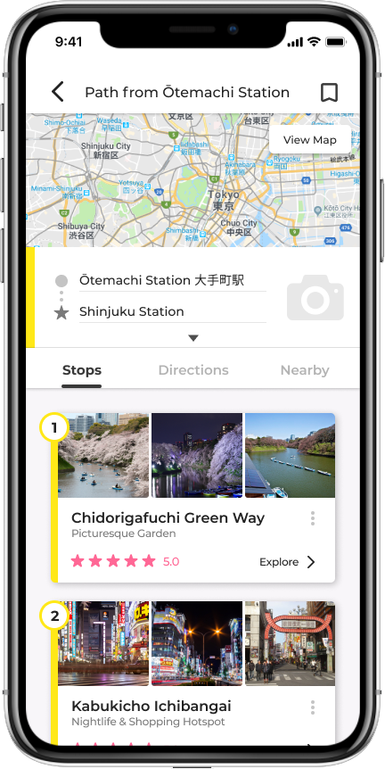

Pathworks
Helping travelers easily discover off-the-path attractions
Role
Product Conceptualization, UX/UI
Tools
Figma, Flowmapp, Invision, Photoshop
Timeline
Summer 2019
Overview
Problem
Today, the influence of social media on travel and tourism has never been larger. People are no longer reading travel guides but instead are flocking to sites and attractions that have gained significant attention on Instagram, Facebook, and other platforms. In turn, these trends take away the true essence of travel by creating experiences abroad fueled by likes, follows, and social media attention. How can we stray away from this phenomenon and cultivate more genuine travel experiences?
Solution
Pathworks is a mobile travel app that allows travelers to conveniently discover and experience “off-the-beaten-path” attractions. Travelers can enter an origin and intended destination and Pathworks can provide a comprehensive list of attractions in between. This “path” that Pathworks creates will allow travelers to get the most out of their trip and genuinely experience what their area has to offer. Instead of flocking to sights that everyone is going to, Pathworks will allow users to become trailblazers which is what traveling is all about!
Preface
Instagram Tourism
According to an article from MyGobe.com, 92% of consumers trust online influencers for their authenticity more than brand advertising. So when travel influencers post extravagant travel photos, their followers would most likely want to go to where they went just to get the same shot. What results are issues of overtourism, environmental degradation, and disregard.
Social media has given rise to a travel culture fueled by likes and follows. How can we solve these growing issues?
Why Pathworks?
Pathworks is the culmination of 2 months of personal work. I wanted to create an accessible app that discourages users from going to the usual or trendy attractions and instead encourages them to discover their own attractions of interest. I also wanted to make Pathworks unique from all the other apps out there by making it convenient for the ease of movement.
"How could Pathworks encourage and cultivate discovery, curiosity, wanderlust back into travel?"
My Process
Research - Ideation - Design
Research
User Persona
Because of the potential scale of Pathworks, it was hard for me to find a starting point on how I can start development. To begin, I created two user personas that can guide me in the ideation phase.
In creating these personas, I also wanted to incorporate important limitations that typical travelers have such as time and money.
Competitor Analysis
I then conducted some competitor research on other similar travel apps. In particular, I focused on Google Trips (now defunct) for its trip planning functions and its database of attractions.
At first, I was impressed with how helpful Google Trips was especially when it came to helping travelers organize travel plans and documents. However, it lacked the theme of “discovery” that I wanted to infuse in Pathworks. Users are only able to find and select attractions that interest them. This would encourage users to go to the most popular attractions instead of going “off-the-beaten-path”. Although useful and convenient, users like Timothy and Jane wouldn’t want to be presented with these popular and established spots.
Nevertheless, I was really inspired by the efficient information architecture of Google Trips and wanted to borrow it for Pathworks but in turn make major modifications to it. Using Flowmapp, I recreated the user flow used in Google Trips for future reference.
Ideation
Narrowing Down Features
Afterwards, I started narrowing down features. It was clear to me that a travel app like Pathworks has to include features that fall into these keystone categories: searching, viewing, and planning . These functional categories follow a natural flow of information processing for a typical traveler. Moreover, to make Pathworks an app that encourages exploration of off-the-beaten-path attractions, I developed the concept of Paths - auto-generated itineraries that suggests and guides users to these attractions while still attending to their original destination. It is this point where the app branding originated from.
Paths
In essence, Path creation would be the main feature of Pathworks. Users would input their origin and destination as well as optional filters and the app would compile a list of spots of interests close to their route. As a result, users can still make it to their intended destination but at the same time, conveniently explore and experience more along the way.

Viewing and Saving
Pathworks would do more than just generate paths. Users would have the ability to edit paths by adding or removing spots. They are able to do so by either browsing recommended spots nearby or searching for them. In other words, Pathworks is just as much as a travel database. Users then would be able to save specific spots and edited paths which can be retrieved later.

User flow
I then created a user flow diagram of how Pathworks will be structured. I aimed to create a fluid and coherent process for the user that emphasized the three core functions: searching, viewing, and planning. For instance, users are naturally inclined to search first, then proceed to viewing, and then planning. Similar to Google Trips, I also kept in mind the ordered levels of geographical specificity. In the case of Pathworks, it would be region, paths, and then spots.
Sketching and Wireframing
Using the user flow diagram, I began sketching wireframes for each step in the user flow.

Design
With the ideation phase set in place, I began to create a mockup using Figma.
Visual Design System
Because other different colors were reserved to represent different types of spots and attractions, a neutral grayscale color palette was chosen for the main user interface in order to avoid confusion.
Design Iterations
There were multiple points in the visual design process where certain components turned out to be awkward or even unusable once tested in Figma's prototype function. For instance, typography was too small or the functionalities were too vague. Here are a few examples of the evolution of Pathwork's visual design.
View and Browse
Pathworks recommends more than just popular attractions but also off-path ones that you may like. Filter these results by category such as for photography, dining, recreation, etc.
A new way to explore
Make the most out of your trip! For your convenience, Pathworks can generate a "path" of spots between you and your intended destination.

Save and retrieve
Edit paths to personalize your own path of exploration. Then create your own itinerary by saving your paths and visit-worthy spots.
Takeaways
What I learned
Pathworks was the most lenthy and ambitous project I have personally undertaken. Over the length of this project, I myself have learned to become a much better designer both visually and empathetically. Before, I was not very familiar with developing and utilizing a set design process. As a result, my other projects might seem a bit "scrappy". Although my current process is far from perfect, I feel like I've come a long way. From starting off with identifying a problem, developing a passionate solution, and then utilizing UX and design methology to execute the solution, I am very proud of how the final results turned out.
Next Steps
I feel like Pathworks has a lot of potential to be a standalone product. However, before moving forward with development, I hope to conduct usability tests as well as add additional content to create a more complete prototype. For usability testings, I will be using Nielsen's ten usability heuristics to evaluate potential issues in Pathworks. Furthermore, I want to conduct user testing. More work is also needed in the search and path functions of the prototype.